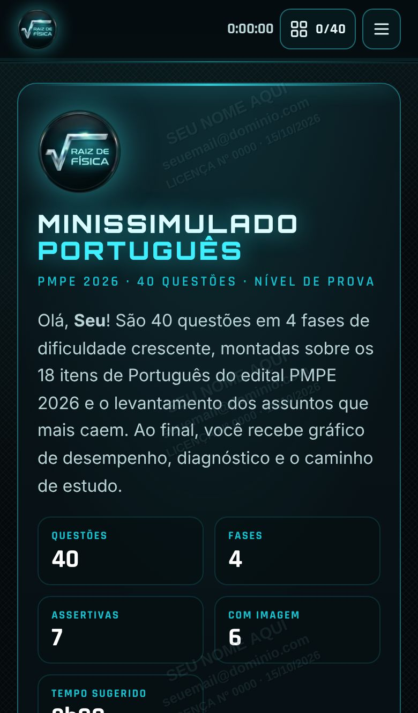
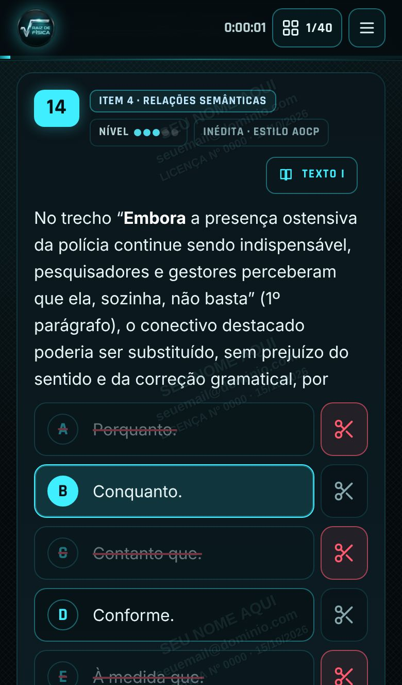
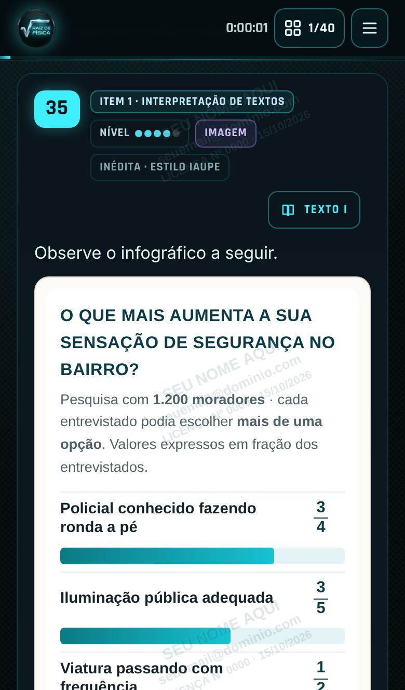
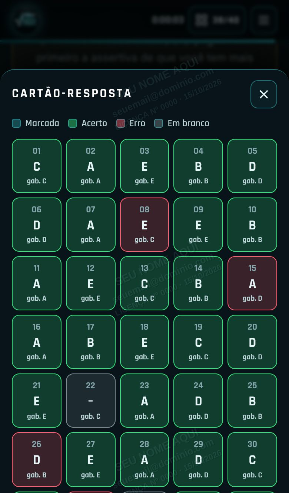
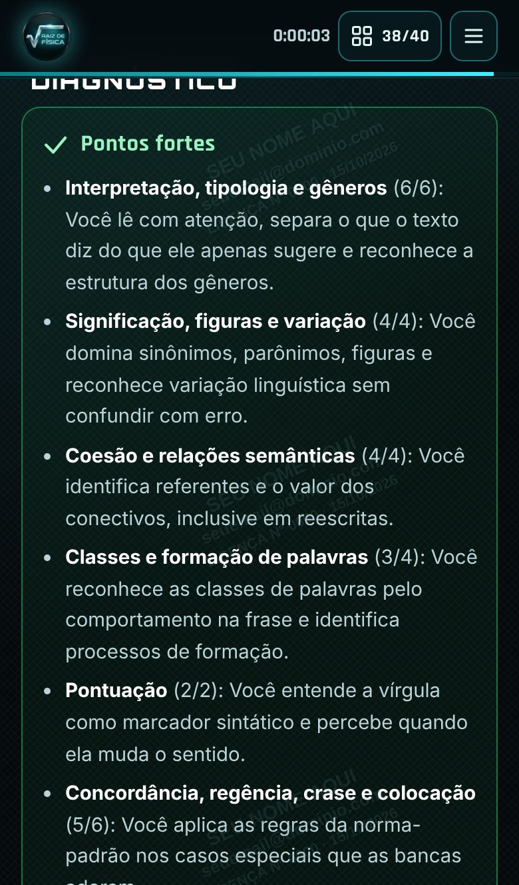
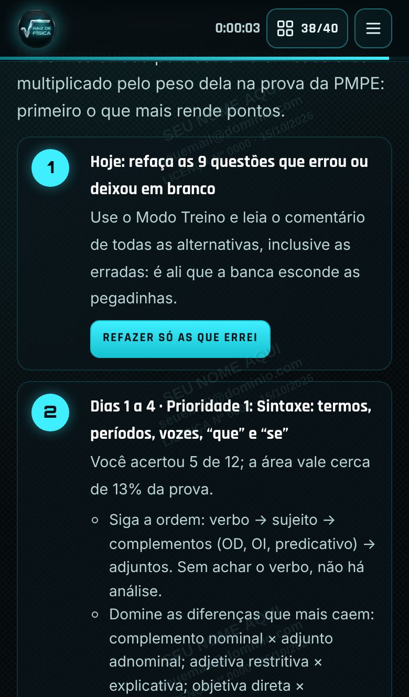
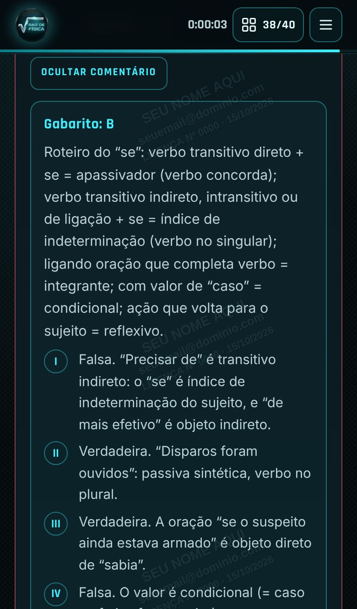

40 questões de Português no nível da prova da PMPE, com o diagnóstico do que você precisa estudar
Minissimulado interativo com gabarito comentado alternativa por alternativa, tesoura para eliminar alternativas, gráfico de desempenho e um caminho de estudo montado a partir dos seus erros. Abre no celular, no tablet e no computador.
liberação pela Kiwify após a confirmação
Por que treinar Português agora
Português abre o Bloco I e não perdoa erro bobo
No edital da PMPE 2026, Português tem 10 questões e divide o Bloco I com História de Pernambuco. Cada acerto conta para o mínimo do bloco e para a sua classificação.
A banca troca uma palavra do texto, muda o valor de um conectivo ou esconde a pegadinha numa assertiva. Só treino no nível certo mostra isso.
Sem diagnóstico, você revisa o que já sabe. Aqui, cada área recebe nota, e o caminho de estudo começa pelo que mais rende pontos.
São 12 questões de sintaxe e funções do “que” e do “se”, com comentário de cada alternativa, inclusive das erradas.
O que você recebe
Um simulado que corrige, explica e aponta o próximo passo
As questões ficam mais difíceis a cada fase, até o nível “desafio de elite”, com distratores de verdade.
Corte as alternativas que você descartou e resolva por eliminação, como no papel da prova.
Toque no número e vá direto à questão. Depois da correção, verde é acerto, vermelho é erro e cinza é branco.
Por que a certa está certa e por que cada errada está errada, além de dicas de prova.
Pizza de acertos e erros, nota por área, pontos fortes, pontos fracos e o que melhorar.
Calculado pelos seus erros e pelo peso de cada assunto na prova, com o capítulo certo para estudar.
Com cronômetro: corrija só no fim, como no dia da prova, ou veja o gabarito a cada questão.
Um toque reabre apenas as questões erradas e em branco, e o histórico mostra a sua evolução.
Funciona no iPhone, no Android, no tablet e no computador, direto no navegador.
Telas reais do material
Veja por dentro







Telas capturadas do material. O resultado mostrado é um exemplo; o seu depende das suas respostas.
Teste agora, de graça
Resolva uma questão de amostra
Esta questão não faz parte das 40 do simulado. Use a tesoura para cortar alternativas e depois marque a sua resposta.
Assinale a alternativa em que a palavra “se” é índice de indeterminação do sujeito.
Conteúdo
Os 18 itens de Português do edital, com o peso de cada um
As 40 questões seguem o peso provável de cada área na prova, com ênfase em sintaxe, a parte que mais separa os aprovados.
Percentual = peso provável da área na prova de Português, estimado pelo Raio-X Raiz de Física a partir do edital e das provas anteriores. Não é garantia de cobrança.
Entrega
Como você recebe
Pagamento por Pix ou cartão em um checkout seguro.
A Kiwify envia o acesso à área de membros, onde estão o link do simulado e as instruções da sua chave de acesso.
No celular ou no computador, abra o link, digite seu nome, e-mail e chave.
Faça as 40 questões, veja o diagnóstico e siga o caminho de estudo.
É para você se
- vai fazer a prova de Soldado ou Oficial da PMPE 2026;
- também presta PCPE, CBMPE, CFO PMPE ou PMAL e quer treinar Português de nível policial;
- já estudou a teoria e quer medir o seu nível de verdade;
- trava em sintaxe, “que” e “se” ou em questões de assertivas;
- estuda pelo celular, nos intervalos do dia.
Não é para você se
- procura uma apostila de teoria completa (este é um material de questões);
- quer um material impresso: ele é interativo e funciona no navegador;
- espera a promessa de “questões que vão cair”: ninguém sabe o que a banca vai cobrar.
Minissimulado de Português · PMPE 2026
Acesso completo
- 40 questões inéditas em 4 fases de dificuldade
- 12 questões de sintaxe e 7 de assertivas
- 6 questões com tirinha, charge, cartaz, placas, conversa e infográfico
- Gabarito comentado de todas as alternativas
- Tesoura, cartão-resposta, cronômetro e Modo Prova ou Treino
- Gráfico de pizza, diagnóstico e caminho de estudo de 14 dias
- Funciona no celular, no tablet e no computador
Pix ou cartão
Se não gostar, peça o reembolso em até 7 dias pela Kiwify ou pelo nosso suporte, sem precisar justificar.
Dúvidas
Perguntas frequentes
Como recebo o material?
Logo após a confirmação do pagamento, a Kiwify envia para o seu e-mail o acesso à área de membros. Lá estão o link do simulado e as instruções para usar a sua chave de acesso. No Pix, a confirmação do pagamento costuma ser imediata.
Funciona no iPhone?
Sim. Abra o link de acesso no Safari ou no Chrome. O material funciona em qualquer navegador atualizado de celular, tablet ou computador.
As questões são de provas anteriores?
Não. As 40 questões são inéditas, elaboradas no padrão das provas reais da PMPE (Instituto AOCP), da PCPE e da PMAL (Cebraspe) e da PMPE e do CBMPE (IAUPE). Por serem inéditas, você não as encontra resolvidas na internet, o que deixa o diagnóstico mais fiel.
Qual é a base teórica?
Os comentários seguem a gramática normativa cobrada em concursos, com a obra A Gramática para Concursos Públicos, de Fernando Pestana, como referência de estudo. Não há vínculo comercial com o autor ou a editora.
Posso imprimir ou compartilhar?
Não. O material é pessoal e intransferível. O acesso é feito com chave de licença, e o seu nome, e-mail e número de licença aparecem como marca d’água. A impressão e a cópia são desativadas.
Por quanto tempo tenho acesso?
O acesso fica disponível na área de membros pelo prazo informado na página de pagamento. Você pode refazer o simulado quantas vezes quiser e acompanhar o histórico de tentativas.
Este é um material oficial da PMPE?
Não. É um material de estudo independente, produzido pela Raiz de Física, sem vínculo com a Polícia Militar de Pernambuco, o Governo de Pernambuco ou o Instituto AOCP.
E se eu não gostar?
Você tem 7 dias de garantia: peça o reembolso pela Kiwify e o valor é devolvido integralmente.
Uma questão a mais na prova vale mais do que R$ 10,80
Treine no nível da banca, descubra onde você perde pontos e estude o que mais rende.
Quero meu minissimulado